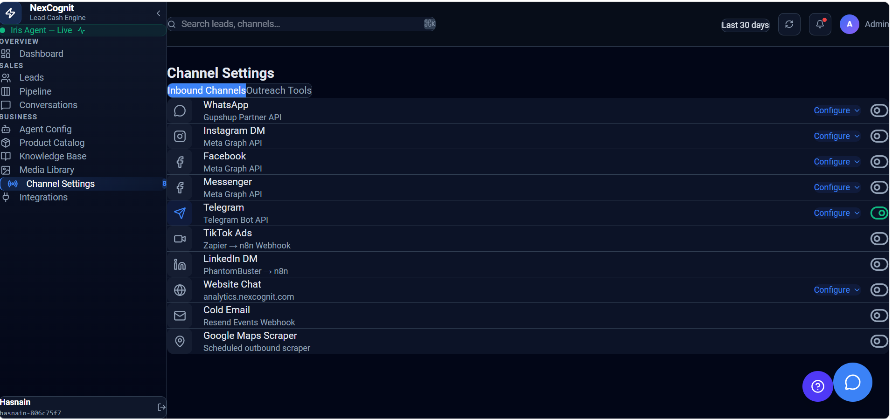
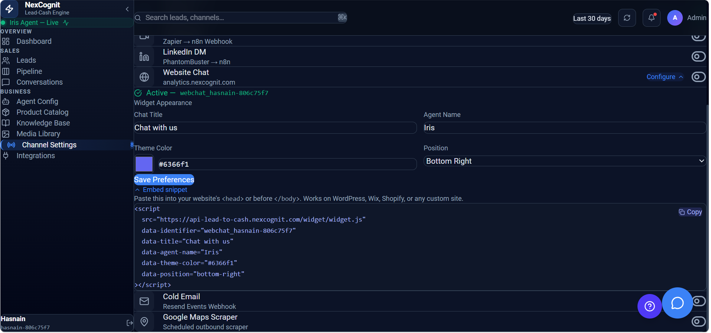
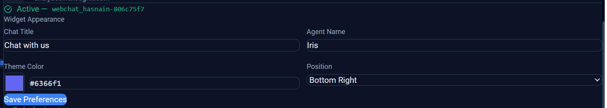
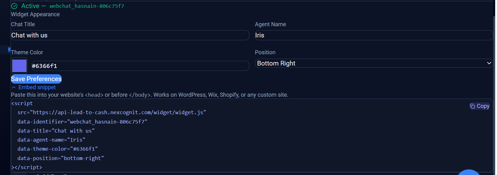
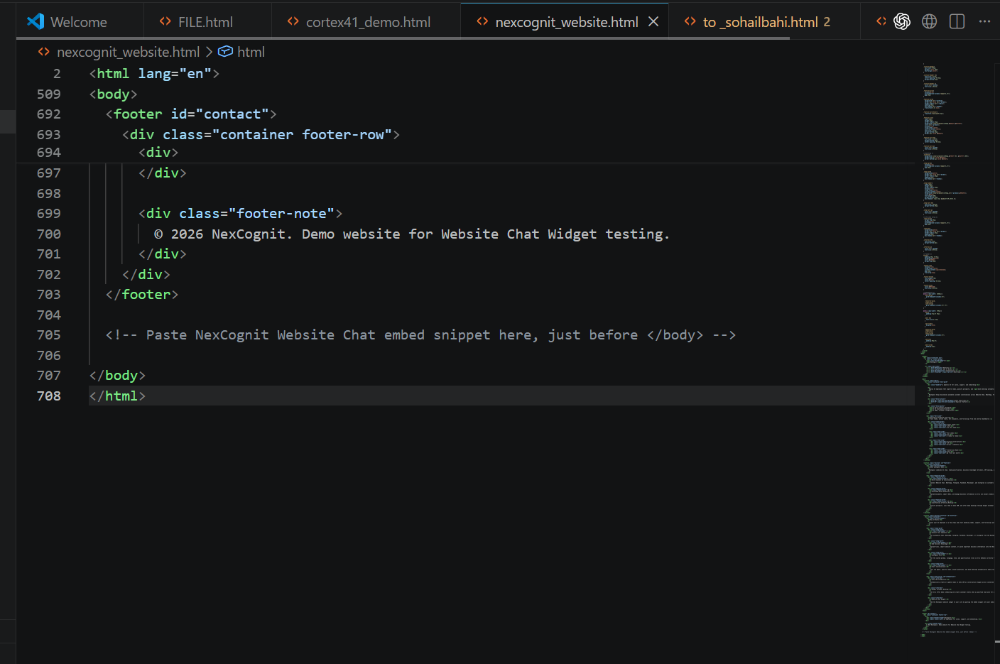

Website Chat
Website Chat lets you add NexCognit’s AI assistant to your website so visitors can start conversations and get help in real time. This guide walks through the setup steps from the NexCognit dashboard to the live website widget.
Prerequisites
- You already have access to your NexCognit account.
- You can edit the HTML of the website where the widget will be installed.
- You are ready to test the widget after installation.
Step 1 — Open Channel Settings
Open Channel Settings in NexCognit and locate the Website Chat channel. This is the entry point for configuring the widget for your website.

Step 2 — Open Website Chat configuration
Click Configure to open the Website Chat setup screen. From here, you can adjust the widget behavior and prepare the embed code for installation.

Step 3 — Review widget appearance settings
In the configuration screen, review the widget appearance settings. You can adjust options such as the chat button position, chat title, and other visible settings so the widget matches your brand and website design.

Step 4 — Copy the embed snippet
NexCognit provides an embed code snippet for your Website Chat widget. Copy this snippet so it can be added to your website HTML.

Step 5 — Open the website HTML file
Open the HTML file for the website where you want the chat widget to appear. This is where the embed code will be inserted.

Step 6 — Paste the snippet before the closing body tag
Paste the embed snippet near the end of the HTML document, just before the closing